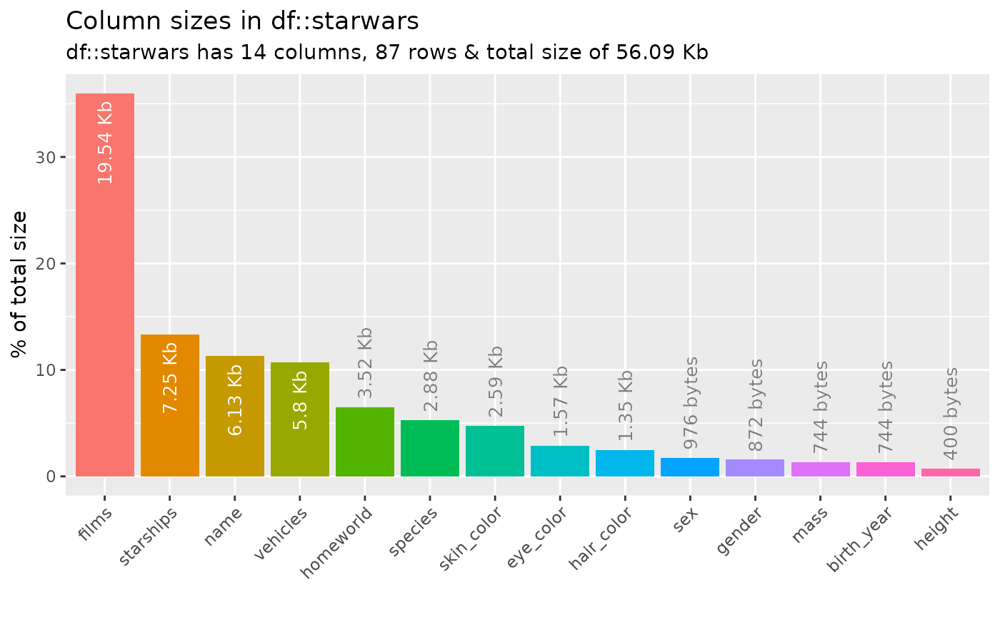
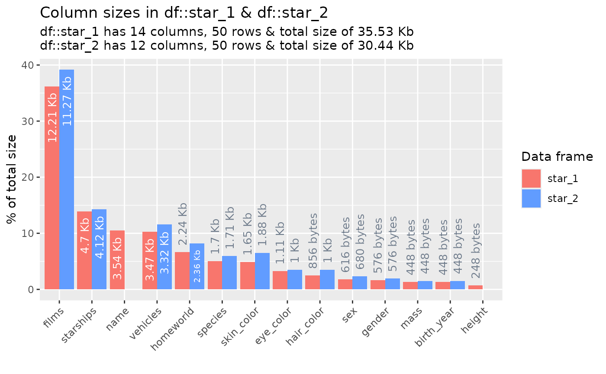

vignettes/pkgdown/inspect_mem_examples.Rmd
inspect_mem_examples.Rmdstarwars
The examples below make use of the starwars and
storms data from the dplyr package
For illustrating comparisons of dataframes, use the
starwars data and produce two new dataframes
star_1 and star_2 that randomly sample the
rows of the original and drop a couple of columns.
starwars
The examples below make use of the starwars and
storms data from the dplyr package
For illustrating comparisons of dataframes, use the
starwars data and produce two new dataframes
star_1 and star_2 that randomly sample the
rows of the original and drop a couple of columns.
inspect_mem() for a single dataframe
To explore the memory usage of the columns in a data frame, use
inspect_mem(). The command returns a tibble
containing the size of each column in the dataframe.
library(inspectdf)
inspect_mem(starwars)## # A tibble: 14 × 4
## col_name bytes size pcnt
## <chr> <int> <chr> <dbl>
## 1 films 20008 19.54 Kb 36.0
## 2 starships 7424 7.25 Kb 13.4
## 3 name 6280 6.13 Kb 11.3
## 4 vehicles 5944 5.8 Kb 10.7
## 5 homeworld 3608 3.52 Kb 6.49
## 6 species 2952 2.88 Kb 5.31
## 7 skin_color 2656 2.59 Kb 4.78
## 8 eye_color 1608 1.57 Kb 2.89
## 9 hair_color 1384 1.35 Kb 2.49
## 10 sex 976 976 bytes 1.76
## 11 gender 872 872 bytes 1.57
## 12 mass 744 744 bytes 1.34
## 13 birth_year 744 744 bytes 1.34
## 14 height 400 400 bytes 0.719A barplot can be produced by passing the result to
show_plot():
inspect_mem(starwars) %>% show_plot()
inspect_mem() for two dataframes
When a second dataframe is provided, inspect_mem() will
create a dataframe comparing the size of each column for both input
dataframes. The summaries for the first and second dataframes are show
in columns with names appended with _1 and _2,
respectively.
inspect_mem(star_1, star_2)## # A tibble: 14 × 5
## col_name size_1 size_2 pcnt_1 pcnt_2
## <chr> <chr> <chr> <dbl> <dbl>
## 1 films 12.21 Kb 11.27 Kb 36.2 39.2
## 2 starships 4.7 Kb 4.12 Kb 13.9 14.3
## 3 name 3.54 Kb NA 10.5 NA
## 4 vehicles 3.47 Kb 3.32 Kb 10.3 11.5
## 5 homeworld 2.24 Kb 2.36 Kb 6.65 8.21
## 6 species 1.7 Kb 1.71 Kb 5.05 5.95
## 7 skin_color 1.65 Kb 1.88 Kb 4.89 6.52
## 8 eye_color 1.11 Kb 1 Kb 3.29 3.48
## 9 hair_color 856 bytes 1 Kb 2.48 3.48
## 10 sex 616 bytes 680 bytes 1.78 2.31
## 11 gender 576 bytes 576 bytes 1.67 1.96
## 12 mass 448 bytes 448 bytes 1.30 1.52
## 13 birth_year 448 bytes 448 bytes 1.30 1.52
## 14 height 248 bytes NA 0.718 NA
inspect_mem(star_1, star_2) %>% show_plot()